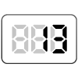

【013】switch文で条件分岐

- プロンプト例
JavaScriptでswitch文を使った完全未経験者向けの問題を５問作成して
- 出力は、consoleに
🔰 switch文ってなに？
switch文は「場合分け」をするための書き方です。
たとえば、
- 👉 数字によって表示を変えたい
- 👉 文字によって処理を変えたい
そんな時に使います。
もし 1 なら → A もし 2 なら → B もし 3 なら → C それ以外 → D
これを switch文 で書くと、スッキリ書けます。
✍ 基本の形（これだけ覚えればOK）
switch (調べたい値) { case 条件1: 実行する処理; break; case 条件2: 実行する処理; break; default: それ以外の時の処理; }
【例】
let num = 1; switch (num) { case 1: console.log('おはよう"); break; case 2: console.log('こんにちは'); break; default: console.log('不正な値です'); }
break は「ストップ！」
→ ここで処理を止める⚠ これがないと、次の case も実行されるので超重要！
default は「それ以外」
→ どれにも当てはまらない時🚨 break を忘れるとどうなる？
おはよう こんにちは
😱 本当は「おはよう」だけなのに、
breakが無いせいで両方出る！
🧩 switch文が得意なケース
| 使う場面 | おすすめ |
|---|---|
| 数字で分岐 | ◎ |
| 文字で分岐 | ◎ |
| 条件がたくさん | ◎ |
| 範囲（90点以上など） | △ → if文 |
switch文 練習問題（超初心者向け）
問題1：数字によるあいさつ表示
変数 num の値によって、表示するあいさつを切り替えましょう。
条件
- 1 → 「おはよう」
- 2 → 「こんにちは」
- 3 → 「こんばんは」
- それ以外 → 「不正な値です」
ひな形
let num = 1; switch (num) { // ここにコードを書く }